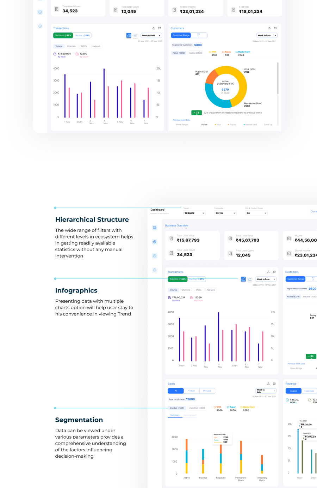
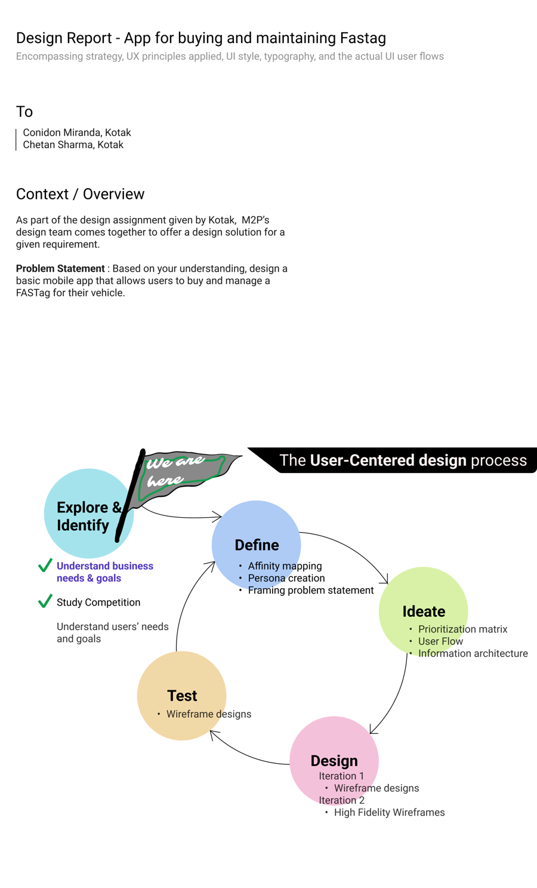
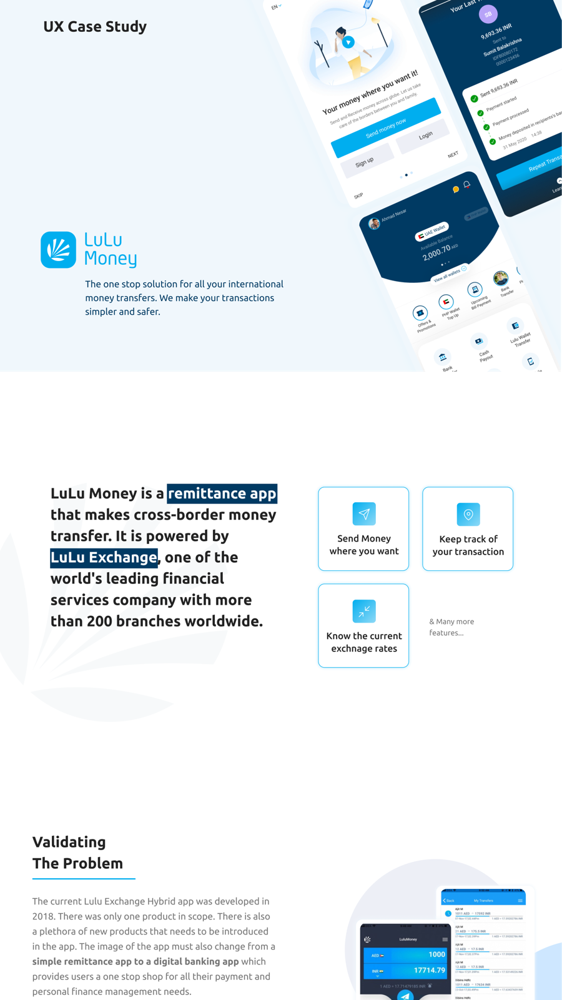
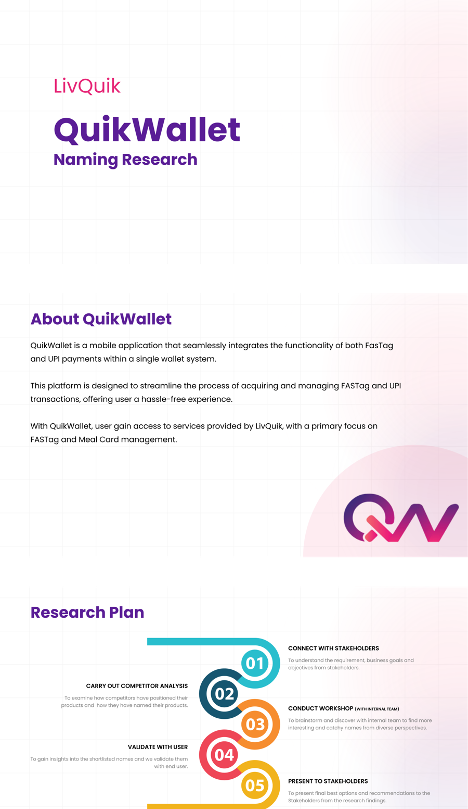
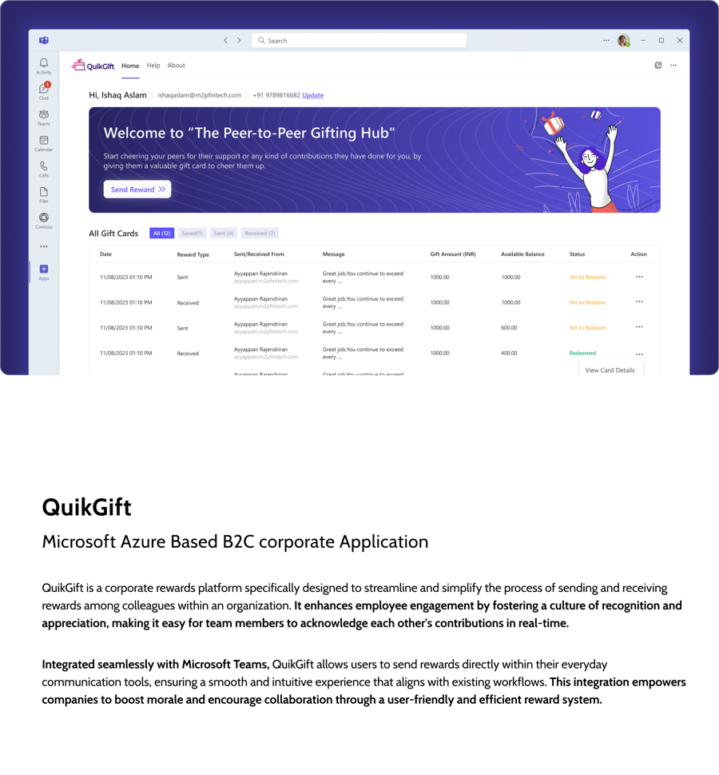
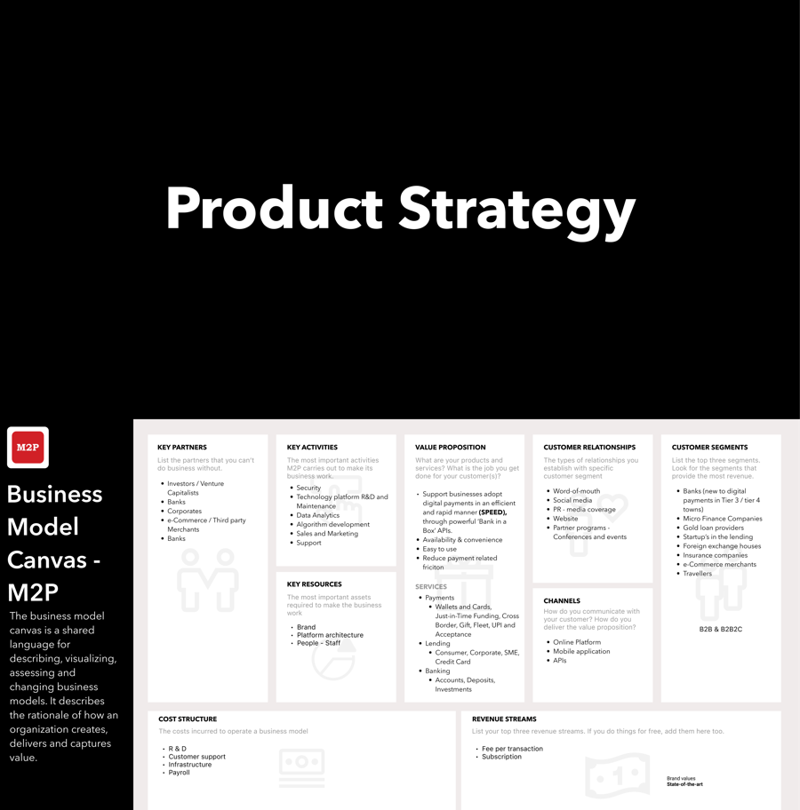
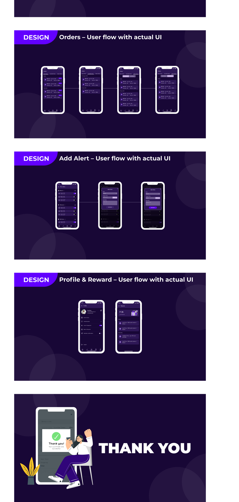
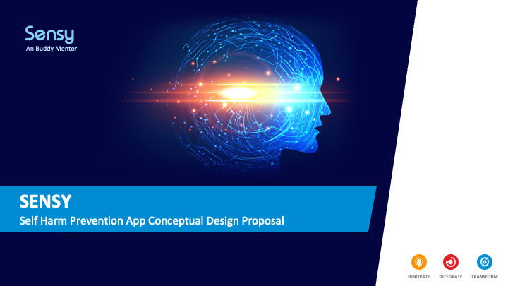
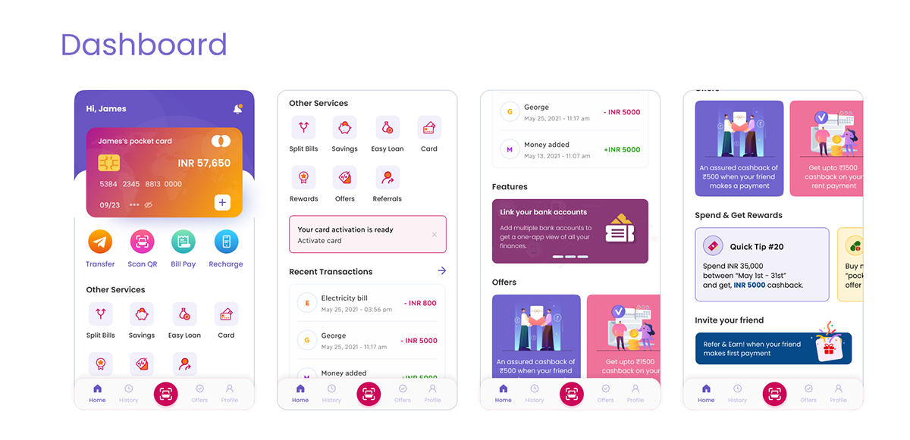
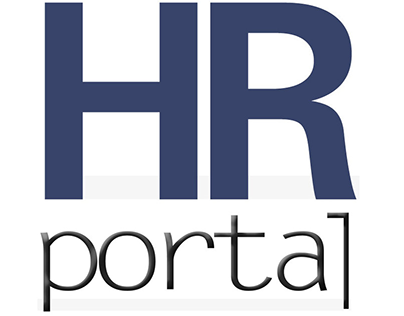

A Tier-1 telecom carrier's enterprise self-service portal, redesigned around an AI workspace as the primary surface. Real client engagement — anonymized here at the client's confidentiality requirement, not a concept.
An AI-powered software delivery platform that automates PLAN, BUILD, and OPERATE through autonomous agents — 40% faster delivery cycles, NPS 28→67.
An Atomic Design foundation with token architecture for light/dark and multi-brand theming — bringing visual consistency across M2P's digital products.

One analytics dashboard for M2P's entire partner ecosystem, replacing spreadsheet emails — 60% completed tasks with ease, 0% task failure across 22 users tested.

A time-boxed app-buying-and-managing brief for Kotak, reframed from a transaction into a trip-planning problem — built around a Toll Estimator no competitor offered.

Auditing Verizon's Business Support ChatBot against a 5-dimension framework I built (Direct, Orient & Guide, Engage, Inform, Connect) — turning a healthy-looking 65% success rate into specific, citable findings and recommended mockups.

Rebuilding LuLu Money's 2018 remittance app into the foundation of a digital bank, across six countries — starting with 25+ stakeholder interviews before a single user session, because this was a business-strategy problem wearing a UI problem's clothes.

Renaming LivQuik's QuikWallet app — 85 names generated by 22 people, tested on 96 real users across 4 cities, twice each (with and without product context), producing an honest two-choice recommendation instead of one forced winner.

Designing QuikGift, a peer-to-peer recognition platform embedded in Microsoft Teams — two personas (a manager, an HR lead) needing the same data at completely different altitudes, served through one data model with two distinct front doors.

A compendium of applied UX research spanning contextual inquiry, diary studies, tree testing, and usability testing — translating field observations into design decisions across fintech, enterprise, and consumer domains.
An honest UX maturity audit of M2P — starting from the Business Model Canvas, benchmarked against Nielsen Norman Group's maturity model (assessed at "Limited"), ending in a scoped plan to redesign one product first with named stakeholders and metrics.

Designing CryptoFarm, a cryptocurrency exchange concept for first-time traders — every competitor already solved "can I trade," so the real design problem was earning enough trust that people would.

A conceptual self-harm prevention companion app, grounded in WHO suicide-prevention guidance — never built or user-tested, and presented exactly as that.

ICICI's Pockets team named legacy UI, brand inconsistency, and usability/accessibility failures as the problem — a UX audit and redesign followed across all nine flows.

A single portal for the quiet gap between accepting an offer and Day 1 — its real copy names M2P directly, backed by published retention research, not invented metrics.

Replacing four fragmented CLI consoles with one glass-pane platform for enterprise IoT device onboarding — 77% faster onboarding, SUS 84 up from a 52 baseline.